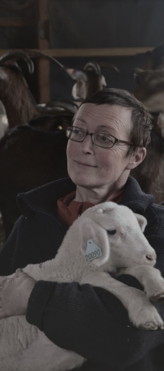

Véronique Kern
Après plusieurs années passées à travailler comme assistante de direction pour le Conseil d’Europe, Véronique s’est tournée vers une vie moins stressante et a décidé de se consacrer à sa passion pour les animaux et la nature. Elle s’emploie aujourd’hui entièrement à son élevage et à la fabrication artisanale de ses fromages.
Située sur commune de Taintrux, la Ferme du Pré du Bois est une exploitation de taille humaine, permettant le contact avec les animaux et comptant une centaine de bêtes. Au sein de sa ferme traditionnelle, Véronique élève vaches, chèvres et brebis, dont le lait est directement transformé en fromage. L’agricultrice possède aussi une truie, des poules et des oies qui évoluent en toute liberté sur la propriété.
Produits
- Fromage de brebis
- Fromage de chèvre
- Fromage de vache
- Meurie
- Tomme aux 3 laits
- Œufs frais
Ferme du pré du bois
698 impasse de l’Envers
88100 Taintrux
Tél : 03 29 52 80 36